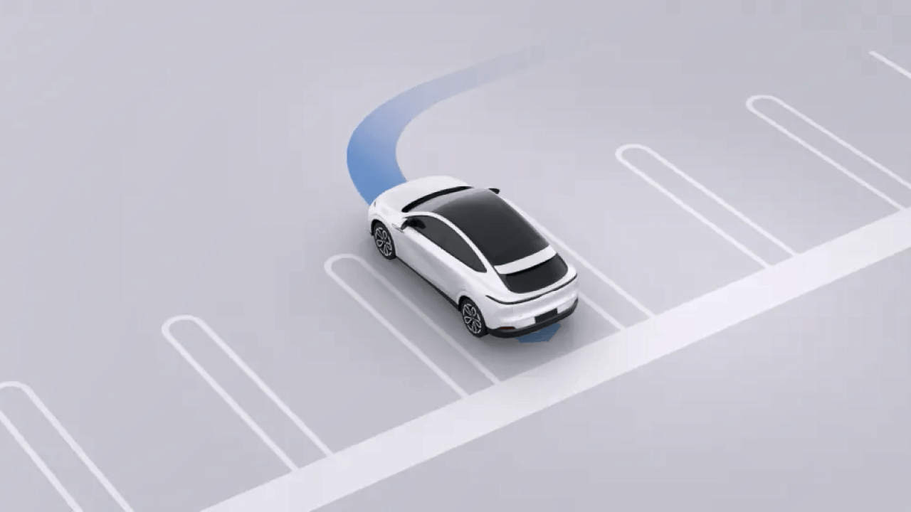
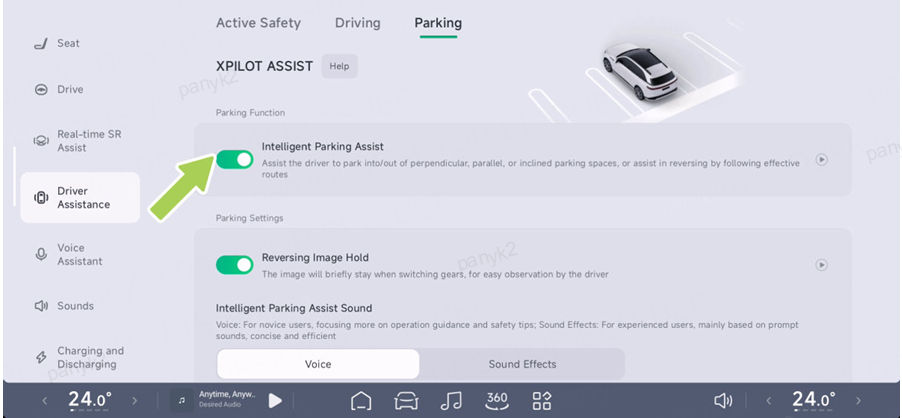
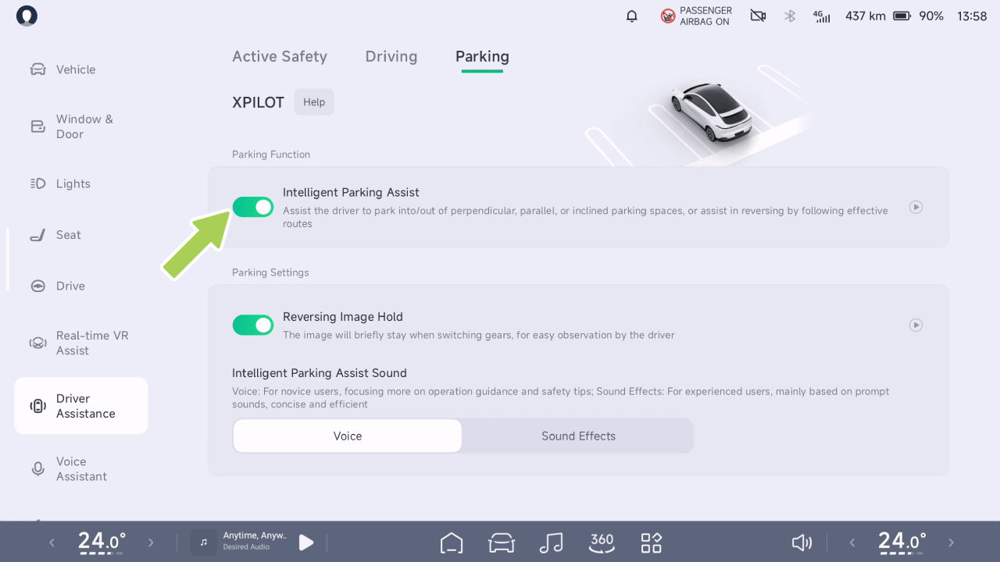

Estacionamiento asistido
Estacionamiento Asistido
Monitoreo de Distancia Delantera/Trasera
• El radar avisa incluso si el obstáculo es blando (como hierbas altas) y no daña el vehículo.
Introducción
Cuando el vehículo está estacionado o circula a baja velocidad, el radar ultrasónico puede detectar la distancia entre el vehículo y los obstáculos circundantes, y emite una advertencia a través de la interfaz SR y un sonido de aviso.
Advertencias, Precauciones y Limitaciones
Es posible que las alertas del radar no funcionen correctamente en los siguientes casos:
advertencia
precaución
• Radar limitado
• Cuando se muestra una barra roja, el obstáculo está cerca del vehículo y requiere atención adicional.
• El vehículo se acerca al obstáculo a una velocidad mayor.
• A medida que disminuye la distancia del vehículo respecto al obstáculo, la frecuencia del tono de advertencia aumentará gradualmente.
Las advertencias, precauciones y limitaciones anteriores no cubren todas las situaciones que afectan el funcionamiento normal de la advertencia del radar.
Consejos
• El radar solo le avisará si su vehículo está en marcha D a una velocidad inferior a 12 km/h; no hay límite de velocidad para la alarma del radar cuando está en marcha R.
Estacionamiento Asistido
Asistente Inteligente de Estacionamiento APA
advertencia
Introducción
El APA es solo una ayuda a la conducción y no puede manejar todas las condiciones de tráfico, clima y entorno, y usted, como conductor de su vehículo, es responsable de la seguridad en la conducción. Por favor, sostenga el volante en todo momento, observe la carretera y tome el control en caso de peligro. No confíe en esta función para controlar el vehículo, ya que podría provocar lesiones o la muerte.
Indicadores en el cuadro de instrumentos
El APA se puede activar
El APA puede ayudar al conductor a estacionar y salir de plazas de estacionamiento verticales, paralelas y diagonales con marcos cableados o inalámbricos. Admite los siguientes métodos de activación:
APA activado
• CID
APA no disponible
• Llave por teléfono*
• Llave inteligente a distancia*



Estacionamiento Asistido
Operación
La "Asistencia de Realidad Virtual" entrará automáticamente en el modo de estacionamiento.
Activación y desactivación
• Pulse la tecla de acceso directo del volante.
• Cuando la interfaz SR muestre el icono de la plaza de estacionamiento, deténgase y cambie a la marcha R.
• Diga "Hey Xpeng, necesito estacionar".
El vehículo solo entrará en modo de estacionamiento si se cumplen las siguientes condiciones:
• La velocidad del vehículo se mantiene por debajo de 30 km/h durante 5 segundos
• La ubicación de navegación no es (autopista/ carretera comarcal/camino rural/vía rápida/ calle principal/vía principal).
En el CID, vaya a la interfaz " →Asistencia a la Conducción→Estacionamiento", donde podrá activar o desactivar el APA.
- Conduzca para buscar la plaza de estacionamiento objetivo.
Usar el APA
1. Puede activar el modo de estacionamiento en la interfaz "Asistencia a la Conducción→Estacionamiento" usando cualquiera de los siguientes métodos:
Consejos
• Por favor, mantenga la distancia lateral entre el vehículo y la plaza de estacionamiento entre 1 y 2 metros mientras busca una plaza de estacionamiento.
• Cambio automático. Cuando el vehículo entra en un entorno de estacionamiento, como un estacionamiento subterráneo, la función "En tiempo


Estacionamiento Asistido
• Al buscar un espacio de estacionamiento, la velocidad del vehículo no debe superar los 24 km/h.
activada, presione dos veces el botón de estacionamiento de la llave de control remoto.
• Llave de teléfono*: Cambie a la posición P, baje del vehículo y cierre las puertas. Abra el módulo de estacionamiento inteligente de la aplicación móvil y toque "Estacionamiento remoto". Una vez que los espejos laterales se plieguen y las luces de emergencia se enciendan, toque "Iniciar estacionamiento".
-
Cuando el espacio de estacionamiento objetivo esté resaltado, presione el pedal de freno y toque en la CID para seleccionar el espacio de estacionamiento objetivo.
-
En este momento, puede estacionar en el espacio mediante los siguientes métodos:
• CID: Toque "Iniciar estacionamiento" en la pantalla de control central y, a continuación, suelte el pedal de freno.
• Al estacionar en un espacio usando el llavero/control, el vehículo cambia automáticamente a P, bloqueando el vehículo y cortando la energía.
Consejos
Consejos
Cuando la tarjeta de estacionamiento muestre la opción de desplazamiento lateral, confirme el desplazamiento lateral antes de tocar "Iniciar estacionamiento".
• Al estacionar en un espacio usando el llavero/llave del control, la llave inteligente/ el control debe mantenerse en las proximidades del vehículo o la función se cancelará.
• Llave de control remoto*: Cambie a la posición P, baje del vehículo y cierre las puertas, mantenga presionado el botón de estacionamiento de la llave de control remoto. Una vez que los espejos laterales se plieguen y las luces de emergencia estén
• Al estacionar en un espacio con la llave móvil, se permite abrir la puerta/el maletero durante cinco minutos después de que el estacionamiento remoto se suspenda, y la puerta
Estacionamiento Asistido
puede cerrarse para acceder y tocar Continuar para completar el estacionamiento remoto.
• En caso de peligro, o en caso de una situación que requiera tomar el control, tome el control de inmediato y no espere a que el vehículo emita una solicitud de toma de control.
• Si el vehículo solicita la toma de control a través de la interfaz SR u otro medio, tome el control de inmediato.
• Asegúrese de que no haya nadie en el vehículo antes de estacionar en un espacio usando la Llave Remota*/Aplicación Móvil.
Si se detecta un peligro, o surge una situación que requiera la toma de control, tome el control de inmediato; no espere a que el vehículo emita una solicitud de toma de control.
• Al usar la Salida de Estacionamiento, baje del vehículo y cierre la puerta, verifique si hay niños u otros objetos importantes olvidados en los asientos traseros.
Antes de estacionar usando la aplicación móvil, siempre asegúrese de que no haya nadie dentro del vehículo.
Cuando la APA está activada, puede pausarse de las siguientes maneras:
Al usar la función de salida de estacionamiento, antes de bajar del auto y cerrar la puerta, verifique el asiento trasero para detectar niños u otros objetos de valor olvidados.
• Estacionamiento con CID: Presione el pedal de freno en cualquier momento para suspender la APA.
Alarma y toma de control
• Estacionamiento con llave de control remoto*: Presione brevemente cualquier tecla de la llave inteligente.
advertencia
• Estacionamiento con Llave de Teléfono*: Toca la tecla “Pausa” en la página correspondiente de la App móvil.
• Si el vehículo envía una solicitud de toma de control mediante un indicador, anuncio de voz, etc., toma el control de inmediato.
Cuando se confirme la seguridad, el APA puede restablecerse mediante:
• Estacionamiento en el CID: Toca “Continuar” en el CID.
Estacionamiento Asistido
• Estacionamiento con llave de control remoto*: Presiona el botón de estacionamiento de la llave de control remoto dos veces.
• Condiciones meteorológicas adversas (p. ej., lluvia intensa, nieve intensa, niebla densa, etc.).
• Estacionamiento con Llave de Teléfono*: Toca “Continuar” en la App móvil.
• La superficie de la carretera es irregular, está helada o resbaladiza.
El APA se desactivará si:
• El material del bordillo no es de piedra o el bordillo no se puede detectar.
• giras el volante manualmente.
• Presionas el pedal de freno.
• Hay superficies en mal estado (p. ej., precipicios, plataformas elevadas, aceras orientadas hacia la calle, etc.).
• El APA se pausa y no se recupera después de 30 segundos.
• Equipado con cadenas antideslizantes o ruedas de repuesto.
• El objeto cargado sobresale del vehículo.
• Se abre la puerta, se acciona el pedal del acelerador o el pedal de freno, lo que provoca que el APA se pause 3 veces.
• Cualquiera de los lados de los espejos exteriores izquierdo o derecho está dañado o en una posición incorrecta.
• Plazas de estacionamiento en calles estrechas, o plazas de estacionamiento estrechas.
Advertencias, Precauciones y Limitaciones
No uses el APA en los siguientes escenarios:
advertencia
• Las modificaciones del vehículo o las reparaciones realizadas en un Centro de Servicio que no sea de XPENG Automobile afectan el funcionamiento normal del vehículo.
• La carretera es una rampa.
• Uno o más sensores ultrasónicos, la Cámara Envolvente están sucios u obstruidos (p. ej., lodo, nieve o agua adherida).
Estacionamiento Asistido
advertencia
Las advertencias, precauciones y limitaciones anteriores no cubren todas las condiciones que pueden afectar el funcionamiento normal del APA.
En los siguientes escenarios, el APA puede no ser capaz de tomar medidas de seguridad y debes tomar el control del vehículo de inmediato:
• Cuando el instrumento o la pantalla de control central te envíe una solicitud de toma de control.
Salida Automática de Estacionamiento Asistido (AEP)
• Cuando el APA se desactive inesperadamente.
Introducción
Los siguientes métodos pueden utilizarse para sacar el vehículo de una plaza de estacionamiento si no se ha movido después de estacionar con la APP Introducción
• Se encontraron vehículos, peatones y objetos durante el estacionamiento y la evasión automática o el frenado no se completaron a tiempo.
• CID: Sube al vehículo, cierra la puerta, cambia a marcha R y toca “Iniciar Salida de Estacionamiento” en el CID.
advertencia
El APA puede presentar las siguientes situaciones, por favor ten en cuenta la toma de control:
• Llave de control remoto: Mantén presionado el botón de estacionamiento de la llave de control remoto. Una vez que los espejos laterales se plieguen y las luces de emergencia se activen, presiona el botón de estacionamiento de la llave de control remoto dos veces.
• Obstrucción por encima y sobre la altura del espejo exterior.
• Obstrucciones colgantes, pequeñas y de poco ancho.
• Llave de teléfono: Abre la App móvil, toca “Estacionamiento Remoto”, y toca “Iniciar Salida de Estacionamiento” después de que los espejos laterales se plieguen y las luces de advertencia de emergencia se enciendan.
• Un objetivo en un punto ciego de la cámara o el radar.
• Peatones o animales.
Estacionamiento Asistido
Consejos
Llamada Remota del Vehículo*(Si corresponde)
Para acceder a la función Park Out, inicie sesión con el número de cuenta del propietario en la pantalla de control central y active el interruptor de estacionamiento superinteligente.
Introducción
Puede usar la llave de control remoto o la llave del teléfono para mover el vehículo hacia adelante o hacia atrás, lo que facilita que el vehículo entre y salga de espacios de estacionamiento estrechos donde las personas no pueden subir o bajar cómodamente.
advertencia
• El AEP es solo una ayuda a la conducción y no puede manejar todas las condiciones de tráfico, clima y situaciones, y usted, como conductor de su vehículo, es responsable de conducir de forma segura. Sostenga el volante en todo momento, observe la carretera y tome el control en caso de peligro. No confíe en esta función para controlar el vehículo, ya que podría provocar lesiones o la muerte.
Consejos
La Llamada Directa tiene una función de evasión de obstáculos, que puede suspenderse de forma activa si se encuentra un obstáculo.
advertencia
• Las advertencias, alarmas y tomas de control del APA, etc., también se aplican al AEP.
La Llamada Directa es solo una ayuda a la conducción y no puede manejar todas las condiciones de tráfico, clima y carretera, y usted, como conductor de su vehículo, es responsable de conducir de forma segura. No confíe en esta función para controlar el vehículo, ya que podría provocar lesiones o la muerte.
Estacionamiento Asistido
Operación
- Mantenga presionado el interruptor para controlar el movimiento del vehículo hacia adelante o hacia atrás. Suelte el interruptor para detener el vehículo.
Apertura y cierre
- Después de que el vehículo entre o salga del espacio de estacionamiento, toque Atrás para salir de la función.
Alarma y toma de control
advertencia
En caso de peligro o de una situación que requiera una toma de control, la función debe suspenderse de inmediato y nunca esperar a que se active la evasión.
La llamada en línea recta saldrá en los siguientes casos:
En la pantalla de control central, vaya a la interfaz “ →Asistencia a la Conducción→ Estacionamiento”, y podrá activar o desactivar el APA.
• La llave del teléfono móvil está demasiado lejos del vehículo.
Llamada en línea recta con la llave del teléfono
1. Abra la App móvil, toque “Llamada Remota del Vehículo”, y los espejos laterales del vehículo se plegarán y se encenderán las luces de emergencia.
• El Bluetooth entre el teléfono móvil y el vehículo está desconectado.
• La evasión de obstáculos se activa 3 veces durante un solo uso.


Estacionamiento Asistido
• El vehículo no se controla para moverse hacia adelante o hacia atrás durante más de 30 s.
• Se encuentran vehículos, peatones y objetos durante el estacionamiento y la evasión activa o el frenado no se completa a tiempo.
Advertencias, Precauciones y Limitaciones
advertencia
• La Llamada en línea recta sale inesperadamente.
No use una llamada en línea recta en los siguientes escenarios:
No realice lo siguiente al usar una llamada en línea recta:
advertencia
• Uno o más sensores ultrasónicos, la Cámara Envolvente están sucios u obstruidos (p. ej. barro, nieve o agua adherida).
• Malas condiciones climáticas (p. ej. lluvia intensa, nieve intensa, niebla densa, etc.).
• Línea de visión alejada del vehículo.
• Depender por completo de la llamada directa para estacionar.
• La superficie de la carretera es irregular, está helada o resbaladiza.
Las advertencias, precauciones y limitaciones anteriores no cubren todas las condiciones que afectan el funcionamiento normal de la llamada en línea recta.
• La carretera es una rampa.
advertencia
Asistencia de Retroceso（RA）
En los siguientes escenarios, una llamada directa puede no ser segura y se debe tomar el control del vehículo de inmediato:
Introducción
• Se le solicita que tome el control del vehículo.
El retroceso con seguimiento es una función que ayuda al conductor a retroceder por la ruta original. Después de entrar en condiciones de carretera difíciles, como callejones sin
Estacionamiento Asistido
salida y carreteras estrechas, puede usar el retroceso con seguimiento para salir del apuro.
Funcionamiento
precaución
Apertura y cierre
El retroceso con seguimiento incluye una función de evasión de obstáculos, que se detiene de forma activa si se encuentra un obstáculo.
El Retroceso con Seguimiento es solo una ayuda a la conducción y no puede manejar todas las situaciones de tráfico, clima y condiciones, y usted, como conductor de su vehículo, es responsable de conducir de forma segura. No dependa de esta función para controlar el vehículo, ya que esto puede provocar un accidente.
advertencia
En el CID, vaya a la interfaz “ →Asistencia al Conductor→Estacionamiento”, y puede activar o desactivar el APA.
Usar el retroceso con seguimiento
1. Al conducir hacia adelante a una velocidad inferior a 20 km/h, el sistema recordará automáticamente la última ruta disponible.
- Detenga el vehículo y cambie a la marcha R.


Estacionamiento Asistido
- En el CID, toque el botón “Retroceso→Asistencia de Retroceso→Iniciar Retroceso”.
• Malas condiciones meteorológicas (p. ej., lluvia intensa, nieve intensa, niebla densa, etc.).
- El sistema retrocederá automáticamente a baja velocidad según la ruta válida.
• La superficie de la carretera es irregular, está helada o resbaladiza.
precaución
• Hay superficies en mal estado (p. ej., acantilados, plataformas elevadas, aceras que dan a la calle, etc.).
• Es probable que una ruta de conducción en D por debajo de 20 km/h se registre como una ruta válida de hasta 100 m.
advertencia
• Antes de activar el seguimiento, retroceder, girar el volante demasiado o conducir en una pendiente borrará una ruta válida.
En las siguientes situaciones en las que una maniobra de retroceso con seguimiento puede no ser segura, tome el control del vehículo de inmediato:
• El sistema solicita tomar el control del vehículo.
Advertencias, Precauciones y Limitaciones
• Cuando el retroceso sale de forma inesperada.
• Se encuentran vehículos, peatones y objetos durante el retroceso y la evasión automática o el frenado no se completan a tiempo.
No use el retroceso con seguimiento en los siguientes escenarios:
advertencia
• Uno o más sensores ultrasónicos o la Cámara Envolvente están sucios u obstruidos (p. ej., con lodo, nieve o agua adherida).
• La carretera es una rampa.
advertencia
Preste atención a la toma de control, ya que puede experimentar lo siguiente al usar el retroceso con seguimiento:
Estacionamiento Asistido
• Obstrucciones por encima de la altura del espejo exterior.
• Obstrucciones colgantes, pequeñas y de ancho reducido.
• Un objetivo en un punto ciego de la cámara o el radar.
• Aproximación repentina de un peatón o un animal.
advertencia
No confíe únicamente en el seguimiento cuando utilice los rastros de seguimiento.
Las advertencias, precauciones y limitaciones anteriores no cubren todas las condiciones que afectan el funcionamiento normal del retroceso con seguimiento.